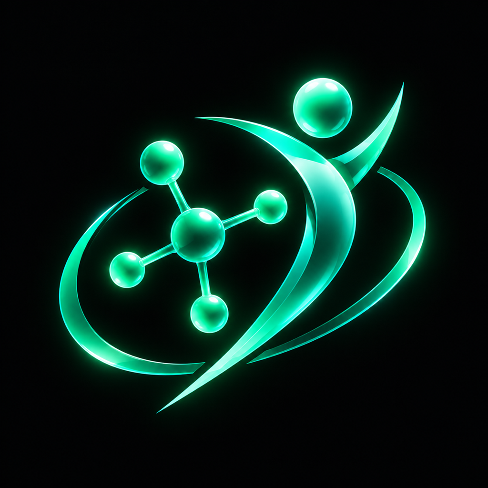

AI-native performance health.
Powered by a multi-model stack.
Xenomere turns wearable streams, lab results, and training logs into decisions. This deck shows the AI we run in production today — and exactly where Qwen, Wan, and Alibaba Cloud infrastructure plug in next.
Consumers get dashboards.
Nobody gets decisions.
Fragmented signals
HRV lives in the wearable app. Labs live in PDFs. Training lives in notes. Protocols live in spreadsheets. None of them talk to each other.
No causal layer
Tools show what happened, never why. “Did the new protocol help my sleep?” is a statistics question nobody answers for consumers.
Noise-grade advice
Generic LLM health chat is fluent and unaccountable. People need deterministic rules first — and language only to explain them.
Xenomere — one record for training, labs, recovery, and protocols.
Training engine
Deterministic program generation, volume landmarks, progression and deload logic — strength, endurance, and hybrid.
Wearables + labs
HealthKit / Health Connect streams and blood work in one timeline, with research-timed draw windows and washout tracking.
n=1 experiments
Guided single-subject trials with baseline/follow-up windows and significance tests on the user’s own data.
Evidence feeds
Large unstructured health-community datasets structured into per-compound benefit/harm evidence with per-cell significance.
Protocol tracking
Scheduling, adherence, and vial-level math for complex self-administered protocols.
Live today
iOS on TestFlight. Android release signed and staged for Play internal testing. Production backend serving the beta now.
Deterministic science underneath.
LLM language on top.
- Statistics first, words second. All assessments are computed by deterministic engines. The LLM layer only translates results into plain-language coaching — it never invents numbers.
- Structured evidence from chaos. LLM classification pipelines turn thousands of unstructured community reports into coded benefit/harm datasets with per-cell significance.
- Context assembly at scale. Wearable deltas, lab changes, adherence and life events are packed into grounded prompts — the model reasons over the user’s actual record, not averages.
- Guardrails by design. Model output is constrained to the computed result set, keeping the product honest and auditable.
A multi-model orchestration system that runs the company.
Every task is routed to the frontier model best suited for it — with browser automation, scheduled agents, media pipelines, and shared memory. Qwen already earns its place in this stack on merit.
Model-agnostic task routing
QA audits, code refactors, research sweeps, and drafting are dispatched across multiple frontier models — including Qwen — chosen per task profile and cost.
Browser + agent automation
Autonomous web operations, store-console workflows, scheduled background agents, and verification loops with hard quality gates.
Video & thumbnail pipelines
Deterministic render pipelines for product videos, reels, and thumbnails — prompt-engineered, branded, and batch-produced.
Real daily load
This is not a demo: Terminal OS runs our engineering QA, research, and content operations every day, at meaningful token volume.
A standing pipeline ready for Wan at production volume.
- Today: automated thumbnails, launch reels, and product explainers rendered through our own deterministic composition pipeline.
- Next: Wan-generated marketing and in-app explainer video — prompt-templated, on-brand, batch-produced per feature release.
- Volume: every app feature ships with video; every marketing push is a batch. Workload grows with the user base.
A Western consumer showcase for Wan
AI video is a contested category. A live European consumer product generating its marketing and in-app content with Wan — documented publicly — is a reference case the category needs.
Concrete workloads, mapped to concrete services.
Qwen-Max as the coaching engine
Production reasoning workload: translate deterministic assessment output into coaching language, per user, per day. Estimated millions of tokens/month at current growth.
Video generation
Marketing batches + in-app explainers generated per release cycle through our existing composition pipeline.
Infrastructure migration
Move the self-hosted production backend (app servers, relational DB, media storage, delivery) onto Alibaba Cloud as the user base scales.
Domain fine-tuning
Fine-tune a health-terminology classification model on our coded datasets to cut classification cost and latency.
Shipped, tested, and iterating fast.
Next 90 days: public iOS + Android launch, Wan video pipeline in production, hosting migration to Alibaba Cloud, first co-branded case study.
A partnership, not a credit request.
Public case study
A documented, co-branded story: European consumer health product running Qwen + Wan in production. Written, designed, and published by us.
In-product placement
“Powered by Qwen / Wan” credit inside a live consumer app and in the videos it generates.
Creator-network reach
Promotion through our creator-economy network — the same channels we use to market Xenomere — plus conference and meetup presence.
Engineering feedback loop
Detailed, reproducible feedback on Model Studio, Wan, and infra from a team that runs multi-model benchmarks daily.
AI Catalyst credits and Model Studio tokens to move the coaching engine to Qwen, the video pipeline to Wan, and the backend to Alibaba Cloud — with a public case study in return.